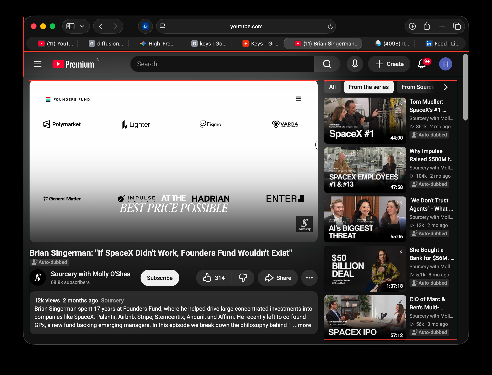

Recursive screen interpretation
Model hypotheses; inspect evidence and uncertainty.

Reconciled context
{
"description": "A dark-themed desktop browser window showing a YouTube video watch page with a video player displaying startup logos, video metadata below it, and recommended videos on the right.",
"regions": [
{
"id": "r0",
"context": "Complete browser application window with the YouTube interface loaded."
},
{
"id": "r1",
"context": "Top browser chrome featuring macOS window control buttons, tab bar with multiple open tabs, and URL navigation bar."
},
{
"id": "r2",
"context": "YouTube top header containing the YouTube Premium logo, search bar, microphone icon, Create button, notification bell, and user profile avatar."
},
{
"id": "r3",
"context": "Main video playback viewport showing a slide with 'FOUNDERS FUND' and various portfolio company logos (Polymarket, Lighter, Figma, Varda, etc.)."
},
{
"id": "r4",
"context": "Video metadata section including video title, channel information ('Sourcery with Molly O'Shea'), subscribe button, engagement controls (like/dislike/share), and description panel."
},
{
"id": "r5",
"context": "Right sidebar presenting category filter pills and a vertical list of recommended videos from 'Sourcery with Molly O'Shea'."
}
],
"conflicts": [],
"unknowns": []
}r0: browser_window

{
"id": "r0",
"parent": null,
"depth": 0,
"label": "browser_window",
"box": [
0,
0,
2398,
1830
],
"status": "analyzed",
"crop_file": "crops/r0.png",
"crop_box": [
0,
0,
2398,
1830
],
"observations": [
"A desktop browser window displaying a YouTube video page in dark theme.",
"Top contains macOS window controls, tab bar, and address bar pointing to 'youtube.com'.",
"Middle content has YouTube navigation header (YouTube Premium logo, search bar, create, notifications, profile).",
"Main page area is split into video player with metadata/description on left, and recommendation sidebar on right."
],
"interpretations": [
"The user is watching a video titled 'Brian Singerman: \"If SpaceX Didn't Work, Founders Fund Wouldn't Exist\"' on YouTube."
],
"uncertainties": [],
"proposal_issues": []
}r1: browser_chrome

{
"id": "r1",
"parent": "r0",
"depth": 1,
"label": "browser_chrome",
"box": [
113,
81,
2285,
251
],
"status": "uninspected",
"reason": "Standard browser navigation and tab interface."
}r2: youtube_header
{
"id": "r2",
"parent": "r0",
"depth": 1,
"label": "youtube_header",
"box": [
113,
251,
2285,
375
],
"status": "uninspected",
"reason": "Standard YouTube top bar with search and actions."
}r3: video_player
{
"id": "r3",
"parent": "r0",
"depth": 1,
"label": "video_player",
"box": [
141,
392,
1549,
1180
],
"status": "uninspected",
"reason": "Main video playback area showing sponsor or company logos."
}r4: video_details
{
"id": "r4",
"parent": "r0",
"depth": 1,
"label": "video_details",
"box": [
141,
1215,
1549,
1629
],
"status": "uninspected",
"reason": "Video title, channel info, subscribe button, like/share controls, and description box."
}r5: sidebar_recommendations
{
"id": "r5",
"parent": "r0",
"depth": 1,
"label": "sidebar_recommendations",
"box": [
1578,
392,
2228,
1656
],
"status": "uninspected",
"reason": "Sidebar containing related video recommendations list."
}